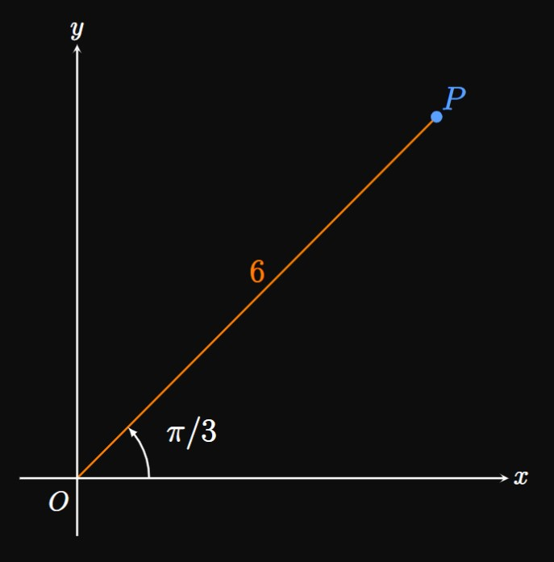
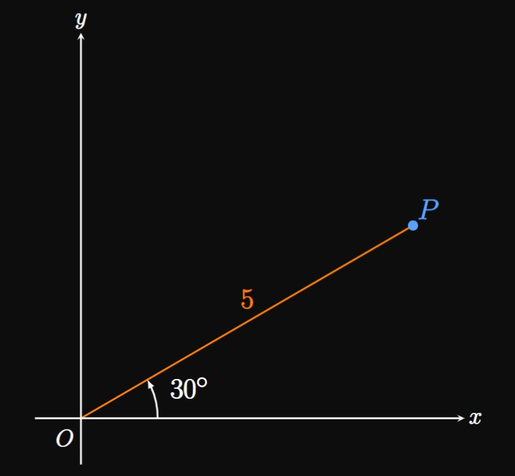
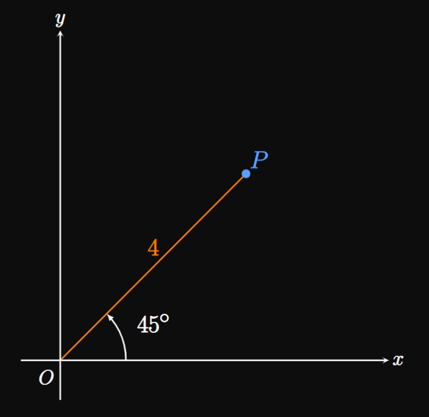

9.1 Exercise Solutions — Polar Coordinates and Functions
EXERCISE 1
What two quantities form a set of polar coordinates?
SOLUTION
The form \(P(r, \theta)\) is a set of polar coordinates.
Here, \(r\) is the length of the line segment connecting the pole (the origin)
to point \(P,\) and \(\theta\) is the angle between the line segment and the polar axis
(the positive \(x\)-axis).
EXERCISE 2
Describe how to plot a point whose polar coordinates are \((-r, \theta).\)
SOLUTION
To plot the point \((-r, \theta),\)
we first plot the point \((r, \theta)\) and rotate the point \(180\degree\)
about the pole.
EXERCISE 3
For
\[(6, \pi/3)\]
plot the point corresponding to the given polar coordinates.
SOLUTION

A set of polar coordinates takes the form \(P(r, \theta).\)
Here \(r = 6\) and \(\theta = \pi/3.\)
We draw a line segment of length \(6\) units that connects the pole (or the origin, denoted \(O\))
to point \(P(6, \pi/3).\)
The angle between the polar axis (the positive \(x\)-axis)
and the line segment is \(\pi/3.\)
Another representation of this point is \((-6, 4 \pi/3);\)
remember that flipping the sign of \(r\) rotates the line segment
\(\pi\) radians about the origin.
EXERCISE 4
For
\[(5, 30 \degree)\]
plot the point corresponding to the given polar coordinates.
SOLUTION

In polar coordinates, we express a point as \((r, \theta);\)
here \(r = 5\) and \(\theta = 30 \degree.\)
We therefore draw a line segment of length \(5\) units that connects the pole (or the origin, denoted \(O\))
to point \(P(5, 30 \degree).\)
The angle between the polar axis (the positive \(x\)-axis)
and the line segment is \(30 \degree.\)
Another representation of this point is \((-5, 210 \degree)\)
because flipping the sign of \(r\) rotates the line segment
\(180 \degree\) about the origin.
EXERCISE 5
For
\[(-4, 225 \degree)\]
plot the point corresponding to the given polar coordinates.
SOLUTION

A set of polar coordinates takes the form \(P(r, \theta).\)
Here \(r = -4\) and \(\theta = 225 \degree.\)
But we wish to express this coordinate in terms of positive \(r \col\)
The point \((-r, \theta)\) is a rotation of point \((r, \theta)\)
by \(\pi\) radians about the origin.
Accordingly, point \(P\) is equivalent to \((4, 45 \degree),\)
so we draw a line segment of length \(4\) units that connects the pole
to point \(P.\)
The angle between the polar axis (the positive \(x\)-axis)
and the line segment is \(45 \degree.\)
EXERCISE 6
For
\[\ds y + 1 = \frac{y}{x}\]
convert the Cartesian equation to a polar function.
SOLUTION
To rewrite the expression in terms of \(r\) and \(\theta,\)
we replace \(x\) with \(r \cos \theta\) and \(y\) with \(r \sin \theta.\)
We then obtain
\[r \sin \theta + 1 = \tan \theta \pd\]
Solving for \(r,\) we have
\[r = \frac{1}{\sin \theta} (\tan \theta - 1) = \boxed{\cos \theta - \csc \theta}\]
EXERCISE 7
For
\[\ds x^2 = 1 + y^2\]
convert the Cartesian equation to a polar function.
SOLUTION
To rewrite the expression in terms of \(r\) and \(\theta,\)
we replace \(x\) with \(r \cos \theta\) and \(y\) with \(r \sin \theta.\)
Doing so gives
\[(r \cos \theta)^2 = 1 + (r \sin \theta)^2 \pd\]
Solving for \(r,\) we have
\[r^2(\cos^2 \theta - \sin^2 \theta) = 1 \or \boxed{r = \pm \sqrt{\frac{1}{\cos^2 \theta - \sin^2 \theta}}}\]
EXERCISE 8
For
\[\ds \sqrt y = 2\]
convert the Cartesian equation to a polar function.
SOLUTION
We want to rewrite the expression in terms of \(r\) and \(\theta.\)
To do so, we replace \(y\) with \(r \sin \theta \col\)
\[\sqrt{r \sin \theta} = 2 \pd\]
Then we solve for \(r\) by squaring both sides, as follows:
\[r \sin \theta = 4 \implies r = \boxed{4 \csc \theta}\]
EXERCISE 9
For
\[\ds x = y - 3\]
convert the Cartesian equation to a polar function.
SOLUTION
Replacing \(x\) with \(r \cos \theta\) and \(y\) with \(r \sin \theta\) gives
\[r \cos \theta = r \sin \theta - 3 \pd\]
Then solving for \(r,\) we find
\[r(\cos \theta - \sin \theta) = -3 \implies \boxed{r =\frac{3}{\sin \theta - \cos \theta}}\]
EXERCISE 10
For
\[\ds x^4 - y^4 = 1\]
convert the Cartesian equation to a polar function.
SOLUTION
Replacing \(x\) with \(r \cos \theta\) and \(y\) with \(r \sin \theta\) gives
\[r^4[\cos^4 \theta - \sin^4 \theta] = 1 \implies \boxed{r = \pm \sqrt[4]{\frac{1}{\cos^4 \theta - \sin^4 \theta}}}\]
EXERCISE 11
For
\[\ds \sqrt{\frac{y}{x}} = x - 2\]
convert the Cartesian equation to a polar function.
SOLUTION
Our objective is to solve for \(r\) in terms of \(\theta.\)
Replacing \(x\) with \(r \cos \theta\) and \(y\) with \(r \sin \theta\)
\((y/x\) can be easily identified as \(\tan \theta)\) gives
\[\sqrt{\tan \theta} = r \cos \theta - 2 \pd\]
We then solve for \(r \col\)
\[r \cos \theta = 2 + \sqrt{\tan \theta} \implies \boxed{r = (\sec \theta) \par{2 + \sqrt{\tan \theta}}}\]
EXERCISE 12
For
\[\ds \ln y - \ln x = 2x\]
convert the Cartesian equation to a polar function.
SOLUTION
Our objective is to solve for \(r\) in terms of \(\theta.\)
Since \(\ln a - \ln b = \ln(a/b),\)
we first rewrite the equation as
\[\ln \frac{y}{x} = 2x \pd\]
Then replacing \(x\) with \(r \cos \theta\) and \(y\) with \(r \sin \theta\)
(identifying \(y/x\) to be \(\tan \theta\)) gives
\[\ln(\tan \theta) = 2 r \cos \theta \pd\]
We then solve for \(r,\) finding
\[\boxed{r = \tfrac{1}{2}(\sec \theta) \ln(\tan \theta)}\]
EXERCISE 13
For
\[\ds e^x \, e^{3y} = 2\]
convert the Cartesian equation to a polar function.
SOLUTION
We need to solve for \(r\) in terms of \(\theta.\)
We first use properties of exponents—namely, \(e^a \, e^b = e^{a + b}\)—to rewrite the equation as
\[e^{x + 3y} = 2 \pd\]
Then replacing \(x\) with \(r \cos \theta\) and \(y\) with \(r \sin \theta\) yields
\[e^{r \cos \theta + 3 r \sin \theta} = 2 \cma\]
or
\[e^{r(\cos \theta + 3 \sin \theta)} = 2 \pd\]
We then solve for \(r,\) as follows:
\[r(\cos \theta + 3 \sin \theta) = \ln 2 \implies \boxed{r = \frac{\ln 2}{\cos \theta + 3 \sin \theta}}\]
EXERCISE 14
For
\[\ds e^{x^2 + y^2} = 6^x\]
convert the Cartesian equation to a polar function.
SOLUTION
We need to solve for \(r\) in terms of \(\theta.\)
It is convenient to first take the natural logarithm of both sides:
\[x^2 + y^2 = x \ln 6 \pd\]
We recognize that \(\sqrt{x^2 + y^2} = r,\)
so \(x^2 + y^2 = r^2.\)
Replacing \(x\) with \(r \cos \theta\) and \(y\) with \(r \sin \theta\) then gives
\[r^2 = (r \cos \theta) \ln 6 \or \boxed{r = (\cos \theta) \ln 6}\]
EXERCISE 15
For
\[\ds \sqrt{x^2 + y^2} = x^2 + y\]
convert the Cartesian equation to a polar function.
SOLUTION
We need to solve for \(r\) in terms of \(\theta.\)
We recognize that \( \sqrt{x^2 + y^2} = r,\)
and replacing \(x\) with \(r \cos \theta\) and \(y\) with \(r \sin \theta\) yields
\[r = r^2 \cos^2 \theta + r \sin \theta \pd\]
Dividing both sides by \(r,\) we have
\[1 = r \cos^2 \theta + \sin \theta \or \boxed{r = \frac{1 - \sin \theta}{\cos^2 \theta}}\]
EXERCISE 16
For
\[\ds x^3 = \tan^{-1} \frac{y}{x}\]
convert the Cartesian equation to a polar function.
SOLUTION
We recognize that \(\tan^{-1}(y/x) = \theta.\)
Then replacing \(x\) with \(r \cos \theta\) confers
\[r^3 \cos^3 \theta = \theta \implies \boxed{r = \sqrt[3]{\theta \sec^3 \theta}}\]
EXERCISE 17
For
\[\ds \theta = \frac{\pi}{2}\]
describe the graph of the polar function.
SOLUTION
One must remember that the graph of \(\theta = \pi/2\) is the \(y\)-axis.
We usually write \(\theta = \pi/2\) to signify the positive \(y\)-axis.
EXERCISE 18
For
\[\ds \theta = 0\]
describe the graph of the polar function.
SOLUTION
Remember that the line \(\theta = 0\) is the polar axis.
EXERCISE 19
For
\[\ds r = 2\]
describe the graph of the polar function.
SOLUTION
The graph of \(r = k\) is a circle of radius \(|k|\) centered at the pole.
Here \(k = 2,\) so the graph of \(r = 2\) is a circle of radius \(2\) centered at \((x, y) = (0, 0).\)
EXERCISE 20
For
\[\ds r = 5\]
describe the graph of the polar function.
SOLUTION
The graph of \(r = k\) is a circle of radius \(|k|\) centered at the pole.
Here \(k = 5,\) so the graph of \(r = 5\) is a circle of radius \(5\) centered at \((x, y) = (0, 0).\)
EXERCISE 21
For
\[\ds r = -4\]
describe the graph of the polar function.
SOLUTION
The graph of \(r = k\) is a circle of radius \(|k|\) centered at the pole.
Here \(k = -4,\) so the graph of \(r = -4\) is a circle of radius \(|-4| = 4\) centered at \((x, y) = (0, 0).\)
EXERCISE 22
For
\[\ds \theta = 1\]
describe the graph of the polar function.
SOLUTION
The graph of \(\theta = \tan^{-1} m\) is a line of slope \(m\) that passes through the pole.
Here \(\tan^{-1} m = 1,\)
so \(m = \tan 1.\)
Hence, the graph of \(\theta = 1\) is a line of slope \(\tan 1 \approx 1.557\) that passes through the point
\((x, y) = (0, 0).\)
We may write this line in Cartesian form as
\[y = (\tan 1) x \or y = 1.557 x \pd\]
EXERCISE 23
For
\[\ds \theta = \frac{\pi}{6}\]
describe the graph of the polar function.
SOLUTION
We remember that the graph of \(\theta = \tan^{-1} m\) is a line of slope \(m\) that passes through the origin.
Here \(\tan^{-1} m = \pi/6,\)
so \(m = \tan(\pi/6) = \sqrt 3/3.\)
Therefore, the graph of \(\theta = \pi/3\) is a line of slope \(\sqrt 3/3\) that crosses the point
\((x, y) = (0, 0).\)
We may write this graph in Cartesian form as
\[y = x \frac{\sqrt 3}{3} \pd\]
EXERCISE 24
For
\[\ds r = 3 \sec \theta\]
describe the graph of the polar function.
SOLUTION
The graph of \(r = c \sec \theta\) is the vertical line \(x = c.\)
In this case \(c = 3,\) so the graph of \(r = 3 \sec \theta\) is the same as the line \(x = 3.\)
EXERCISE 25
For
\[\ds r = -8 \sec \theta\]
describe the graph of the polar function.
SOLUTION
The graph of \(r = c \sec \theta\) is the vertical line \(x = c.\)
Here \(c = -8,\) so the graph of \(r = -8 \sec \theta\) is the line \(x = -8.\)
EXERCISE 26
For
\[\ds r = 2 \csc \theta\]
describe the graph of the polar function.
SOLUTION
The graph of \(r = c \csc \theta\) is the horizontal line \(y = c.\)
We identify \(c = 2,\) so the graph of \(r = 2 \csc \theta\) is the same as the line \(y = 2.\)
EXERCISE 27
For
\[\ds r = -7 \csc \theta\]
describe the graph of the polar function.
SOLUTION
The graph of \(r = c \csc \theta\) is the horizontal line \(y = c.\)
We have \(c = -7,\) so the graph of \(r = -7 \csc \theta\) is the line \(y = -7.\)
EXERCISE 28
For
\[\ds r = 2 \cos \theta\]
describe the graph of the polar function.
SOLUTION
Remember that the graph of \(r = k \cos \theta\) is a circle of radius \(|k/2|\) centered at \((x, y) = (k/2, 0).\)
Here \(k = 2,\) so the circle's radius is \(2/1 = 1\)
and its center is \((x, y) = (1, 0).\)
EXERCISE 29
For
\[\ds r = -5 \cos \theta\]
describe the graph of the polar function.
SOLUTION
We remember that the graph of \(r = k \cos \theta\) is a circle of radius \(|k/2|\) centered at \((x, y) = (k/2, 0).\)
Here \(k = -5,\) so the circle's radius is \(5/2\)
and its center is \((x, y) = (-5/2, 0).\)
EXERCISE 30
For
\[\ds r = 4 \sin \theta\]
describe the graph of the polar function.
SOLUTION
The graph of \(r = k \sin \theta\) is a circle of radius \(|k/2|\) centered at \((x, y) = (0, k/2).\)
Here \(k = 4,\) so the circle's radius is \(2\)
and its center is \((x, y) = (0, 2).\)
EXERCISE 31
For
\[\ds r = -7 \sin \theta\]
describe the graph of the polar function.
SOLUTION
The graph of \(r = k \sin \theta\) is a circle of radius \(|k/2|\) centered at \((x, y) = (0, k/2).\)
Here \(k = -7,\) so the circle's radius is \(7/2\)
and its center is \((x, y) = (0, -7/2).\)
EXERCISE 32
For
\[\ds r = 4 \theta\]
describe the graph of the polar function.
SOLUTION
The graph of \(r = b \theta\)—here \(b = 4\)—is a spiral that passes through the pole.
Since \(b \gt 0,\) the spiral curls in the counterclockwise direction.
EXERCISE 33
For
\[\ds r = 3 + \theta\]
describe the graph of the polar function.
SOLUTION
The graph of \(r = a + b \theta\) is a spiral;
here \(a = 3\) and \(b = 1.\)
Since \(b \gt 0,\) the spiral curls in the counterclockwise direction.
Moreover, \(r = 3\) when \(\theta = 0.\)
Thus, the spiral passes through the point \((x, y) = (3, 0)\)—a shift in the positive \(x\)-direction,
as predicted by the positive value of \(a.\)
EXERCISE 34
For
\[\ds r = 2 - 5 \theta\]
describe the graph of the polar function.
SOLUTION
We remember that the graph of \(r = a + b \theta\) is a spiral.
We identify \(a = 2\) and \(b = -5.\)
Since \(b \lt 0,\) the spiral curls in the clockwise direction.
And \(r = 2\) when \(\theta = 0,\)
so the spiral passes through the point \((x, y) = (2, 0)\)—a shift in the positive \(x\)-direction,
as predicted by the positive value of \(a.\)
EXERCISE 35
For
\[\ds r = -6 - 4 \theta\]
describe the graph of the polar function.
SOLUTION
Recall that the graph of \(r = a + b \theta\) is a spiral.
We identify \(a = -6\) and \(b = -4.\)
Since \(b \lt 0,\) the spiral curls in the clockwise direction.
Also, \(r = -6\) when \(\theta = 0,\)
so the spiral passes through the point \((x, y) = (-6, 0)\)—a shift in the negative \(x\)-direction,
as predicted by \(a \lt 0.\)